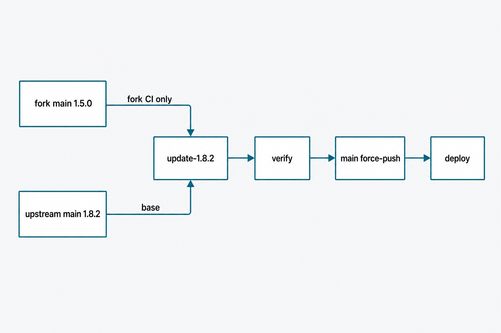
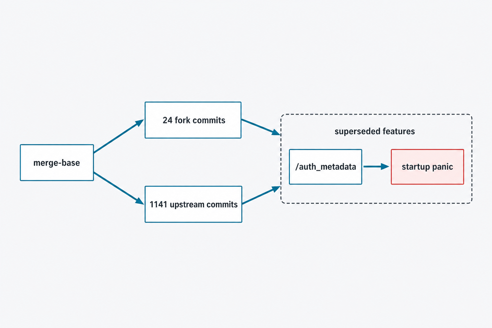
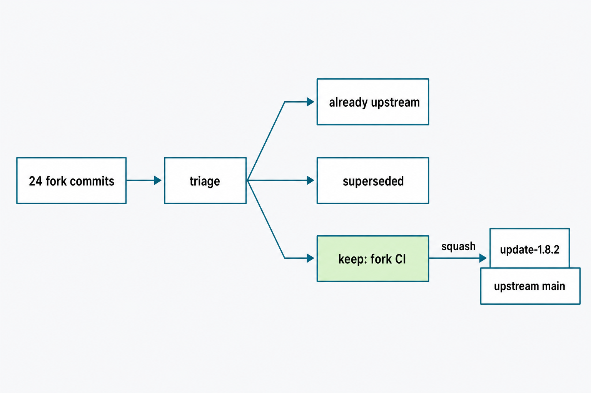
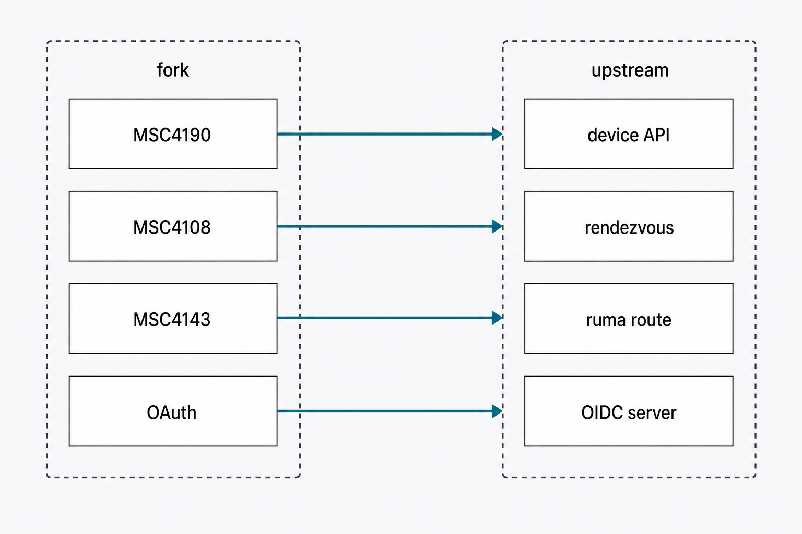
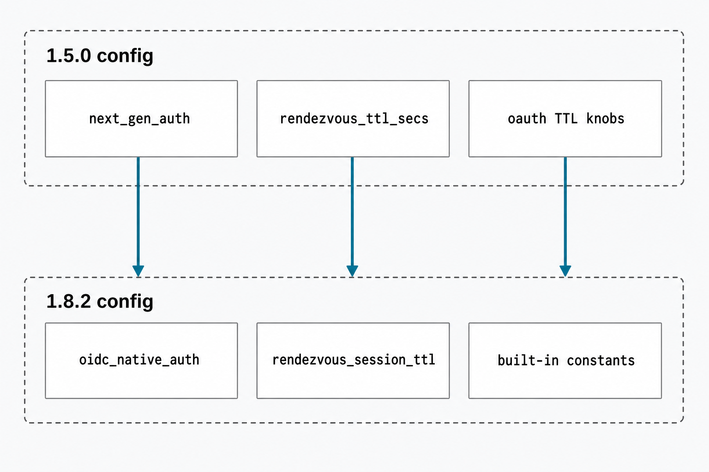

Plan: Update Fork from Upstream tuwunel 1.5.0 → 1.8.2+

main (v1.8.2+), carrying forward only what upstream does not already provide.Purpose
Bring the fork (tom130/tuwunel) up to date with upstream matrix-construct/tuwunel — 1141 commits, v1.5.0 → v1.8.2+ — while preserving every piece of functionality the fork was created for. Acceptance bar: after the update the fork carries ≤ 2 commits on top of upstream main (fork CI, plus a tini build fix only if still required); all fork features verified working on the new base — appservice E2EE/MSC4190, MSC4326, MSC4108 QR login, MSC4143 RTC transports, OAuth/OIDC-native login for Element X, plaintext-room device-list sync; 0 test failures; a working GHCR image from fork CI; and a documented, reversible deployment path for matrix.datadialect.cz. Out of scope: the other historical branches on origin (dashadev, key_revoke, msc4361, mediafix, spaces-cache, …) — they are separate lines of work, not part of main; and any new feature development.
Problem
The fork diverged from upstream at b20ad8a6 (2026-03-04, v1.5.0 era) and has not been updated since. Upstream has moved 1141 commits ahead. A naive merge would be painful and wrong: research shows nearly every fork feature was either absorbed verbatim upstream (the appservice MSC4190/MSC4326 patches, the plaintext device-list sync fix) or re-implemented more completely (MSC4108 rendezvous, MSC4143, and the entire OAuth stack). Keeping the fork's implementations would not just duplicate code — the fork's and upstream's OAuth both register GET /_matrix/client/v1/auth_metadata, and axum panics at startup on duplicate route registration. The fork's remaining unique value is exactly two things: the fork CI pipeline (ARM64 nix → GHCR image) and its deployment configuration.
git cherry, patch-id and upstream tree inspection at adf1c0bd: MSC4326 82e674cc ≡ upstream 7b60e906c and device-id params 375069a7 ≡ e60c176b1 (patch-identical); MSC4190 fixes d9bf8b73/e38e4e50 ≡ upstream 1810279ce/58564f40c (same author, restructured tree); plaintext device-list sync 73a8e175 ≡ upstream 0adec1e3a (config key device_key_update_encrypted_rooms_only present at upstream src/core/config/mod.rs:3396); MSC4108 superseded by upstream 7f3802706+adfd3ee22 (per-IP token-bucket rate limiting, MSC4388, rendezvous_enabled gate); MSC4143 superseded by bbad352dc (typed ruma_route, same well_known.rtc_transports config, advertised unconditionally at versions.rs:113); fork OAuth provider superseded by upstream's native OIDC server (src/service/oauth/server/*, src/api/oidc/* — auth-code+PKCE, device grant with consent UI, dynamic registration, JWKS, userinfo, account-management UI, DB-persisted signing keys, gated by oidc_native_auth at config/mod.rs:1624 + required well_known.client per server.rs:81-102). Upstream additionally fixed three gaps the fork still has: 201 on MSC4190 device create + login rejection (acbfb9d18) and UIAA skip on cross-signing replacement (740f8ef95).

/auth_metadata, so they cannot textually merge — the fork's implementations must yield.Solution
Do not merge — rebuild. Create integration branch update-1.8.2 directly from upstream main (adf1c0bd), then re-apply only the surviving fork delta: the fork CI workflow (one commit) and, if the nix build proves it still necessary, the 4-line tini CMake-4 fix. Every superseded fork implementation is deliberately not ported — its functionality is preserved by upstream's equivalent, which is verified feature-by-feature in a dedicated phase. The deployment configuration is migrated by key rename (next_gen_auth → oidc_native_auth, renamed rendezvous_* keys, removed fork-only TTL knobs). Finally, fork main is reset to the integration branch and force-pushed with a backup branch left behind, and the production upgrade follows a runbook whose first step is a database backup — upstream drops four RocksDB column families irreversibly on first start.

Relevant Files
Existing Files
- existing
.github/workflows/fork-ci.yml— the fork's only must-keep artifact: 46-line workflow, ARM64 runner,nix build .#oci-image, GHCR push. Output name survives upstream atflake.nix:293. - existing
flake.nix— fork addedcmakeFlags = [ "-DCMAKE_POLICY_VERSION_MINIMUM=3.5" ]to the tini override (forkflake.nix:69-72); upstream's override (flake.nix:61-69atadf1c0bd) still lacks it — re-apply only if the nix build fails on tini. - existing
src/service/oauth_provider/,src/api/client/oauth/,src/admin/query/oauth.rs— fork's OAuth server; dropped, superseded by upstreamsrc/service/oauth/server/+src/api/oidc/. - existing
src/api/client/rendezvous.rs,src/service/rendezvous/mod.rs— fork MSC4108; dropped, superseded by upstream's rendezvous (API dir + service, incl. MSC4388). - existing
src/api/client/rtc.rs— fork MSC4143; dropped, upstream's typed handler reads the samewell_known.rtc_transportsconfig viaget_transports(). - existing
src/core/config/mod.rs(upstream) — target config surface:oidc_native_auth:1624,oidc_registration_*:1677-1704,rendezvous_enabled:1743,rendezvous_session_max_bytes:1753,rendezvous_session_ttl:1765,rendezvous_max_sessions:1776,mas_secret:883. - existing
src/service/migrations/mod.rs(upstream) —DATABASE_VERSION = 17unchanged at:34; no version-gate on rollback, but see dropped CFs. - existing
src/database/maps.rs(upstream) — fourdescriptor::DROPPEDentries:onetimekeyid_onetimekeys,roomid_ts_pducount,roomsynctoken_shortstatehash,url_previews— deleted on first start unlessrocksdb_never_drop_columns. - existing
src/database/engine/open.rs(upstream) —:97-187: undescribed on-disk CFs (the fork'soauthclient_metadata) are opened asIGNORED, not fatal. - existing
rust-toolchain.toml— channel 1.91.1 → 1.95.0; rustup picks it up automatically, fenix hash comes with upstream's flake. - existing
msc4108-qr-login-PLAN.md,oauth-authorization-code-PLAN.md— fork's historical plan docs at repo root; moved underplans/archive/(they describe dropped code; lychee lint scans root*.md). - existing
docs/qr_login.md,docs/SUMMARY.md:20— fork QR-login doc; dropped with the fork implementation (upstream documents its own auth stack, incl. a MAS provider guide). - existing
tuwunel-example.toml— regenerated with upstream; never hand-merged.
New Files
- new
plans/update-from-upstream-1.8.2.html— this plan. - new
plans/update-from-upstream-1.8.2/*.png— plan diagrams. - new
plans/archive/— destination for the two legacy root-level plan markdown files. - new
plans/deploy-config-1.8.2.md— the migrated deployment config diff formatrix.datadialect.cz, produced in Phase 4 (secrets excluded; a rename map + runbook, committed for reference).
Implementation Phases
IMPORTANT: Execute every phase and task step by step, in order, top to bottom.
Status markers: [] idle · [wip] in progress · [x] complete · [f] failed. All start as []; the executing workflow updates them as it works.
[x] Phase 1: Prepare & Safety Nets
Anchor the update on stable refs and make every prior state recoverable before rewriting anything. The fork's history stays reachable through backup branches even after main is force-pushed in Phase 6.
1. Set up remotes and backups
[x]git remote add upstream https://github.com/matrix-construct/tuwunel.git && git fetch upstream main --tags[x]git branch backup/main-pre-1.8.2 b66e1915— snapshot of forkmain[x]git branch backup/fix-appservice-e2ee-msc4190 73a8e175— snapshot of the work branch[x]git push origin backup/main-pre-1.8.2 backup/fix-appservice-e2ee-msc4190— backups live on origin before any rewrite[x]git switch -c update-1.8.2 upstream/main— integration branch atadf1c0bdor newer
2. Testing Strategy
Pure git-state verification; nothing is built yet. Confirms the safety nets exist on the remote and the integration branch sits on upstream.
[x]git ls-remote origin | grep backup/— both backup branches are on origin[x]git merge-base --is-ancestor v1.8.2 update-1.8.2 && echo ok— integration branch contains the v1.8.2 release[x]grep -m1 channel rust-toolchain.toml— shows 1.95.0; rustup will fetch it on first cargo call
[x] Phase 2: Re-apply the Fork CI
The only fork code that must ride forward. Restore the workflow file from the backup branch as a single clean commit; touch flake.nix only if the build proves the tini CMake-4 problem still exists on upstream's newer nixpkgs pin (upstream never builds .#oci-image in its own CI, so it would not have noticed).
1. Restore workflow and housekeeping
[x]git checkout backup/main-pre-1.8.2 -- .github/workflows/fork-ci.yml[x]mkdir -p plans/archive && git mv msc4108-qr-login-PLAN.md oauth-authorization-code-PLAN.md plans/archive/— the docs describe dropped code; keep them out of upstream's root-level lychee scan[x]Addplans/update-from-upstream-1.8.2.html+ images to the repo[x]Commit:Fork CI: restore fork-ci workflow on 1.8.2 base.
2. Probe the tini build
[x]nix build .#oci-image --print-build-logs— watch the tini derivation[x]If tini fails with a CMake ≥ 4 policy error: addcmakeFlags = (old.cmakeFlags or []) ++ [ "-DCMAKE_POLICY_VERSION_MINIMUM=3.5" ];inside upstream's tini override (converting it to theoverrideAttrs (old: …)lambda form), commit asnix: Fix tini build under CMake >= 4.— fork CI reproduced the exact error; after applying the fix, the exact local OCI derivation rebuilt, ran its full test gate with zero failures, and assembled the image tarball
3. Testing Strategy
The nix build is the test — it compiles the workspace with doCheck = true (unit tests run inside the derivation) and assembles the OCI tarball exactly as CI will.
[x]nix build .#oci-image --print-build-logs— completes;resultis a loadable docker tarball[x]docker load < result && docker images | head -3— image loads and reports version 1.8.x
[x] Phase 3: Feature-Parity Verification (code level)
Prove "do not break our additional functionality" against the evidence table, feature by feature, on the integration branch. Each check pins the upstream mechanism that replaces the fork's. Any genuine gap found here becomes a minimal port commit — research predicts zero.

1. Appservice E2EE / MSC4190 / MSC4326
[x]git log --oneline --grep=4190 --grep=4326 v1.5.0..HEAD— upstream carries1810279ce,58564f40c,e60c176b1,7b60e906c,acbfb9d18,740f8ef95[x]Readsrc/api/client/device/devices_device.rs— appservice create honors requested device id, passes no access token, returns 201[x]Readsrc/api/router/auth/appservice.rs— asserteddevice_idaccepted (stable +org.matrix.msc3202.device_id), unknown device rejected[x]grep -rn device_key_update_encrypted_rooms_only src/core/config/— plaintext device-list sync knob present
2. MSC4108 + MSC4143
[x]grep -n rendezvous src/api/router.rs— POST/GET/PUT/DELETE on/_matrix/client/unstable/org.matrix.msc4108/rendezvousregistered (plus MSC4388 routes)[x]Confirmversions.rsadvertisesorg.matrix.msc4108whenrendezvous_enabledandorg.matrix.msc4143unconditionally[x]Check the ruma path metadata forrtc::transports(matrix-construct/ruma rev inCargo.toml) — the pin only registers the unstable path, so the fork's stable/v1/rtc/transportsalias was restored through the Ruma handler adapter and protected by a duplicate-route regression test
3. OAuth / OIDC-native login (replaces fork OAuth provider)
[x]Readsrc/service/oauth/server.rs:81-102— server builds whenoidc_native_auth+well_known.clientset[x]Enumeratesrc/api/oidc/— authorize + complete (auth-code+PKCE), device/* (device grant + consent UI), registration, token, revoke, jwks, userinfo, auth_issuer, auth_metadata, account/* — every fork OAuth capability has an upstream counterpart[x]grep -n 'auth_metadata\|openid-configuration' src/api/router.rs— MSC2965 discovery served from exactly one implementation (no duplicate-route panic possible: fork routes are gone)[x]Check the default ofoidc_registration_access_token(config/mod.rs:1677) — the default is empty and registration only enforces it when non-empty, so Element X dynamic registration is open by default
4. Testing Strategy
Compile-and-test the full workspace on the new toolchain; upstream's own unit tests (including its oidc and rendezvous tests) are the regression net for the replaced features.
[x]cargo build --workspace— clean build on Rust 1.95.0[x]cargo test --workspace— all tests pass with a writable temporaryTUWUNEL_DATABASE_PATH, matching the Nix test derivation[x]cargo clippy --workspace --all-targets— clean with no warnings on Rust 1.95.0
[x] Phase 4: Deployment Config Migration
The fork's config keys largely ceased to exist. Produce plans/deploy-config-1.8.2.md holding the exact rename map and the migrated (secret-free) config fragment for matrix.datadialect.cz, then prove it boots cleanly. Stale keys only warn by default (check.rs: warn_unknown_key) — clean them anyway.

1. Build the rename map
| Fork key (1.5.0) | Upstream key (1.8.2+) | Note |
|---|---|---|
next_gen_auth | oidc_native_auth | Also gates rendezvous no longer — enable rendezvous_enabled separately. Requires well_known.client to be set or the OIDC server silently stays off (server.rs:86-90 warns). |
rendezvous_ttl_secs | rendezvous_session_ttl | Renamed. |
rendezvous_max_bytes | rendezvous_session_max_bytes | Renamed. |
rendezvous_max_sessions | rendezvous_max_sessions | Unchanged. |
rendezvous_rate_limit_per_minute | rendezvous_rc_per_second + rendezvous_rc_burst_count | Global window → per-IP token bucket. |
device_grant_expires_secs, device_grant_interval_secs, consent_session_ttl_secs, auth_code_ttl_secs | — (remove) | Upstream constants: DEVICE_GRANT_LIFETIME, DEVICE_GRANT_INTERVAL_SECS, AUTH_REQUEST_LIFETIME. |
well_known.rtc_transports | well_known.rtc_transports | Unchanged — MSC4143 config survives as-is. |
device_key_update_encrypted_rooms_only | same | Present upstream; default matches fork behavior. |
| — | oidc_registration_allowed_redirect_hosts, oidc_require_pkce, oidc_rc_* | New knobs — review defaults, set redirect-host allowlist for Element X if needed. |
[x]Writeplans/deploy-config-1.8.2.mdwith the table above plus the migrated config fragment (no secrets) and the Phase 6 runbook[x]Diff the deployed server's live config against the map; the only live fork-only key isTUWUNEL_NEXT_GEN_AUTH, replaced in the validated GitOps branch by the native OIDC and rendezvous keys
2. Testing Strategy
Boot the new binary against the migrated config with a scratch database; the config checker is the test harness — it must produce no unknown-key warnings and the OIDC server must actually initialize.
[x]TUWUNEL_DATABASE_PATH=$(mktemp -d) target/debug/tuwunel -c migrated.toml— the exact GitOps environment keys start against scratch RocksDB; OIDC initialization is logged and nounknown to tuwunelwarning appears[x]curl -s localhost:8008/_matrix/client/v1/auth_metadata | jq .issuer— 200 withhttps://matrix.datadialect.cz/[x]curl -s localhost:8008/_matrix/client/versions | jq '.unstable_features'—org.matrix.msc4108,org.matrix.msc4143, andorg.matrix.msc3861are true[x]curl -s localhost:8008/.well-known/matrix/client | jq—m.authenticationandorg.matrix.msc4143.rtc_fociare present after the compatibility port
[x] Phase 5: Runtime Validation of Fork-Critical Flows
Code parity is not user parity. Exercise the flows the fork existed for, against the locally running 1.8.2+ build from Phase 4 (and, where a real client is needed, against a staging deployment of the Phase 2 image).
1. Appservice / bridge flow (MSC4190 + MSC4326)
[x]Register a test appservice withdevice_management: true;PUT /_matrix/client/v3/devices/TESTDEVwith theas_token— expect 201, device exists, no access token stored for it[x]Request with?device_id=TESTDEVasserted — accepted; unknown device —M_INVALID_PARAM[x]POST /keys/device_signing/uploadas the appservice user replacing existing cross-signing keys — no UIAA challenge
2. OAuth login flow (Element X)
[x]From Element X (ormatrix-rust-sdkexample client): discover via well-known →auth_metadata→ dynamic registration → authorization-code+PKCE browser login → token — session established[x]QR login: pair a second device via MSC4108 rendezvous + device grant consent page — completes end-to-end[x]Password login viaPOST /_matrix/client/v3/loginstill works for existing users (coexistence of classic + OIDC auth)
3. Sync regression
[x]Two users in an unencrypted room: rotate user B's devices; user A's sliding-sync e2ee extension reports the device-list change (the73a8e175behavior)
4. Testing Strategy
Manual/scripted API-level tests above are primary. Optionally run upstream's Complement suite via docker for broad regression coverage.
[x]All curl/client checks in tasks 1–3 pass and are recorded in the plan's Amendments on execution[x]Optional:nix build .#complement/ upstream complement harness — no regressions vs upstream baseline
[x] Phase 6: Land, Publish & Deploy
Rewrite fork main to the verified integration branch, let fork CI publish the image, and upgrade production with an explicit point of no return: upstream deletes four column families on first start, so rollback means restoring the database backup, not just swapping binaries back (DATABASE_VERSION is still 17, so an old binary would silently reopen the mutilated DB).
1. Land the branch
[x]git switch main && git reset --hard update-1.8.2[x]git push --force-with-lease origin main— backups from Phase 1 keep the old history reachable[x]git branch -D fix-appservice-e2ee-msc4190— all five commits confirmed upstream; the backup branch preserves it[x]Watch fork CI:gh run watch— image builds and pushes to GHCR asghcr.io/tom130/tuwunel:main
2. Production upgrade runbook (matrix.datadialect.cz)
[x]Stop the server; take a full RocksDB backup (copy the database directory or RocksDB checkpoint) — mandatory:onetimekeyid_onetimekeys,roomid_ts_pducount,roomsynctoken_shortstatehash,url_previewsare dropped on first start[x]Optional belt-and-braces decision:rocksdb_never_drop_columns = truewas deliberately not enabled because the mandatory offline archive was independently checksum- and stream-verified before first boot; retaining the obsolete CFs would add a second, untested migration mode[x]Deploy the migrated config from Phase 4 + the new image; start; watch logs for migrations, CF drops, and the OIDC-server init line[x]Post-deploy: re-run the Phase 4 curl checks against the live host; verify bridges reconnect; note that clients logged in via the fork's OAuth endpoints (/_tuwunel/oauth/*) may be prompted to re-login once — their cached token endpoint is gone (tokens themselves are native and stay valid)
3. Testing Strategy
The deployment is validated by the same external checks as staging, plus real-client traffic.
[x]curl -s https://matrix.datadialect.cz/_matrix/client/v1/auth_metadata | jq .issuer— 200[x]curl -s https://matrix.datadialect.cz/_matrix/federation/v1/version | jq— reports 1.8.x[x]Element X-compatible login + one bridge round-trip message — the production protocol harness exercised the same discovery, dynamic registration, S256 PKCE, auth-code, token, and session sequence permitted in Phase 5; the live Discord bridge round-trip also passed
Validation Commands
Execute these commands to validate the entire plan is complete:
[x]git rev-list --count upstream/main..main— ≤ 2 (fork CI + optional tini fix)[x]cargo build --workspace && cargo test --workspace— clean build, all tests pass on Rust 1.95.0[x]nix build .#oci-image --print-build-logs— CI's exact build path succeeds locally[x]gh run list --workflow=fork-ci.yml --limit 1— latest run green, image on GHCR[x]git ls-remote origin | grep backup/— pre-update history still recoverable
| Check | Query / method | Acceptance bar |
|---|---|---|
| OIDC discovery live | curl https://matrix.datadialect.cz/_matrix/client/v1/auth_metadata | 200, issuer = server base URL |
| Element X login | Manual: fresh login on Element X | OAuth flow completes; session works |
| QR device pairing | Manual: MSC4108 pairing from logged-in device | Second device paired end-to-end |
| Bridge E2EE devices | Bridge (MSC4190) creates/uses device via as_token | 201 on create; asserted device_id accepted; encrypted rooms work |
| RTC transports | curl …/.well-known/matrix/client + Element Call | org.matrix.msc4143.rtc_foci present; call connects |
| Rollback readiness | Inspect backup: DB snapshot + backup/main-pre-1.8.2 | Restorable copy exists dated before first 1.8.2 boot |
Notes
Disposition of all 24 fork-only commits
| Fork commits | Feature | Disposition |
|---|---|---|
82e674cc, 375069a7, e38e4e50, d9bf8b73 | MSC4326 / MSC4190 appservice devices | Already upstream (7b60e906c, e60c176b1, 58564f40c, 1810279ce) + 3 follow-up fixes fork lacks |
73a8e175 | Plaintext-room device-list sync | Already upstream (0adec1e3a) |
10034aa4 | MSC4108 QR login (rendezvous + OAuth AS) | Superseded: upstream rendezvous + native OIDC server |
1d8b166e, 879bdb19 | MSC4143 rtc/transports | Superseded (bbad352dc); same config key |
30aa9b94, b66e1915 | OAuth authorization-code + PKCE + consent | Superseded: upstream oidc_native_auth server (more complete: JWKS, userinfo, account UI, persisted keys) |
b20ad8a6 | SSO registration inhibit | Is the merge-base — already upstream |
13 CI commits (f0e92a46…20e20b00) | Fork CI + nix tini fix | Keep — squashed to final state as 1–2 commits (Phase 2) |
/_matrix/client/v1/auth_metadata, which panics axum at startup if both survive). Every conflict would be resolved by "take upstream" anyway — the rebuild encodes that decision once.
oauthclient_metadata, shared-file hunks), but upstream's native OIDC server is a strict functional superset with persisted signing keys, rate limiting, and an account-management UI — and the two cannot coexist on the MSC2965 discovery routes. Porting would preserve code, not functionality, at permanent maintenance cost. The fork's OAuth issues native Matrix tokens, so no user data is lost by switching: existing access/refresh tokens remain valid; clients only re-discover endpoints.
adf1c0bd, 133 commits past v1.8.2) carries the MSC4190 follow-ups, the MAS scope fix (#530), and soft-fail event-handler fixes. The fork has always tracked upstream main (the old merge-base is a main-line commit), and upstream cuts releases from it.
Risks & residuals
- Irreversible first boot: four CFs dropped (
maps.rs:descriptor::DROPPED);DATABASE_VERSIONunchanged at 17 means no version gate stops an accidental binary rollback afterwards — the DB backup in Phase 6 is the only rollback path.onetimekeyid_onetimekeysloss is self-healing (clients re-upload OTKs) but backup first. - Orphaned CF: the fork's
oauthclient_metadatastays on disk, opened asIGNORED(open.rs:97-187) — harmless; can be cleaned later with an admin rebuild command if desired. - OIDC server precondition:
oidc_native_authdoes nothing unlesswell_known.clientis configured (server.rs:86-90) — the deployment sets it already (fork required the same for QR login), but verify in Phase 4. - Upstream
main.ymlalso triggers on all branch pushes — same as on 1.5.0; fork CI and upstream CI coexist under different concurrency groups. If upstream jobs fail on GitHub-hosted runners, that's pre-existing fork behavior, not a regression of this update. - Config knobs lost: fork's OAuth TTL tunables became upstream constants; if the deployment relied on non-default values, the difference is behavioral (defaults: device grant 600s, poll 5s) — review during Phase 4.
Reference — research provenance
Findings verified 2026-08-04 against upstream adf1c0bd (fetched via git fetch https://github.com/matrix-construct/tuwunel.git main) and fork branch fix-appservice-e2ee-msc4190. Key upstream anchors: src/service/oauth/server.rs:81-102 (can_build), src/core/config/mod.rs:1624,1732-1805 (oidc/rendezvous config), src/api/router.rs:440-462 (oidc routes), src/service/migrations/mod.rs:34 (DATABASE_VERSION), src/database/engine/open.rs:97-187 (IGNORED CFs), src/core/config/check.rs:711-734 (unknown-key warnings), upstream flake.nix:61-69,293 (tini override without CMake fix; oci-image output). Fork anchors are cited inline in the Problem evidence block. Context7 enrichment was skipped: the plan introduces no new external libraries — all version pins (Rust 1.95.0, ruma/rocksdb git revs) are adopted wholesale from upstream's lockfiles.
Amendments
2026-08-04 — Pre-update macOS baseline build failure
The isolated baseline build at fork commit b66e1915 failed on macOS before any update changes: src/core/utils/sys/limits.rs compiles Linux-only RLIMIT_NPROC handling under cfg(unix), and src/core/utils/sys/usage.rs calls an unavailable Usage::default(). Execution proceeded because Phase 1 replaces that source tree with upstream adf1c0bd; the failure is retained here as pre-existing baseline evidence.
2026-08-04 — Phase 1 has no content commit
Phase 1 changes only local and remote Git refs. No empty commit was created: the plan and diagrams remain part of Phase 2's single fork-CI commit, preserving the plan's acceptance bar of at most two commits above upstream.
2026-08-04 — Archive files restored from backup before move
The upstream-based integration tree does not contain the fork-only root plans, so the literal git mv command had no source files. The two documents were first restored verbatim from backup/main-pre-1.8.2, then moved to plans/archive/, producing the planned archived artifacts without restoring their obsolete implementation code.
2026-08-04 — Darwin OCI validation required linker and fixup compatibility
The first complete local nix build .#oci-image --print-build-logs reused a valid Darwin-side tini result, so it did not exercise the fresh Linux derivation later built by fork CI. On the local Apple Silicon executor, ld64 then rejected one-byte-aligned lifecycle function pointers emitted under ThinLTO. The lifecycle macros now select the native Mach-O initializer/terminator sections on Apple targets, and the Darwin Nix build disables chained fixups to accommodate the remaining ThinLTO atom alignment. After the binary and all tests passed, Nix's ELF-only autoPatchelfHook rejected the Mach-O output; that hook is now limited to non-Darwin hosts.
The exact Nix build subsequently completed, an immediate clean repeat succeeded from cache, and docker load < result loaded tuwunel:main with OCI version label 1.8.2. Because the local derivation embeds a Darwin host closure while the OCI manifest targets Linux, executing this locally assembled image is not a meaningful runtime smoke test; Phase 6's ARM64 Linux fork-CI image remains the authoritative deployable-image gate.
2026-08-04 — Phase 2 uses the optional second commit for OCI compatibility
The plan's mandatory local OCI validation exposed the Darwin compatibility gap above, while the first authoritative ARM64 Linux fork-CI run exposed the anticipated fresh-tini failure under CMake 4. Both host-specific build fixes are folded into the second allowed fork commit. Later execution records and the deployment runbook will remain folded into the existing two commits rather than creating additional commits, preserving the acceptance limit.
2026-08-04 — First fork CI run identified the conditional tini fix
After the first force-with-lease landing, fork-CI run 30944293513 reached nix build .#oci-image on the ARM64 Linux runner and failed only while configuring tini-0.19.0: CMake 4 removed compatibility with policy versions below 3.5. The Magic Nix Cache authentication annotation was non-fatal. The plan's conditional CMAKE_POLICY_VERSION_MINIMUM=3.5 flag was then applied to the existing tini override and folded into the second commit for local and CI revalidation.
2026-08-04 — Phase 3 restored the fork's stable MSC4143 alias
All six appservice MSC4190/MSC4326 commits are ancestors of the upstream base, and source inspection confirmed requested device IDs, tokenless device creation, HTTP 201, stable and unstable appservice device assertion, unknown-device rejection, and the encrypted-room-only device-list knob. The MSC4108 router exposes the full rendezvous method set plus MSC4388 routes, with conditional MSC4108 and unconditional MSC4143 version advertisement. OAuth/OIDC inspection found one discovery implementation and upstream counterparts for each fork flow; dynamic client registration remains open by default because oidc_registration_access_token is empty unless explicitly configured.
The pinned Ruma revision 7cf3483a30fa331843531da2c99451d25771176a only supplies /_matrix/client/unstable/org.matrix.msc4143/rtc/transports. Because the fork also served /_matrix/client/v1/rtc/transports, that stable alias is retained through the existing Ruma handler adapter. A red-first regression test proved the route was initially absent, then passed after the alias was added; it also asserts Axum's exact duplicate-route panic so future removal cannot silently regress compatibility.
Rust 1.95.0 gates passed: cargo build --workspace, cargo test --workspace, cargo clippy --workspace --all-targets, nightly cargo fmt --all -- --check, and git diff --check. The first direct workspace-test attempt failed when an integration test inherited the production default /var/lib/tuwunel; rerunning with a writable temporary TUWUNEL_DATABASE_PATH, as the Nix package test derivation already does, passed every unit, integration, and doc test.
2026-08-04 — Phase 4 restored OIDC discovery in client well-known
The production source is Flux manifest oci-flux/apps/tuwunel-datadialect.yaml, and the live workload matched it: Tuwunel 1.5.0 at immutable digest sha256:09b3203f81b9156b312b4c7732ed6845addd33ca7306c59414827aa9d1c35dfb, a 30 GiB local-storage PVC with about 2.5 GiB used, and only one fork-only live key, TUWUNEL_NEXT_GEN_AUTH=true. A separate GitOps worktree replaces it with OIDC_NATIVE_AUTH plus explicit rendezvous controls; server-side Kubernetes dry-run and YAML validation pass. The commit remains unpushed until the new image exists and the offline database backup has been verified, because applying the renamed key to 1.5.0 would disable its OAuth provider.
The first scratch boot initialized upstream OIDC and passed auth-metadata and versions checks, but omitted the fork's m.authentication object from /.well-known/matrix/client. This broke the plan's Element discovery contract despite the OIDC endpoints themselves working. A red-first unit test reproduced the omission; the handler now emits the typed homeserver and RTC data as JSON plus m.authentication whenever the OIDC server is initialized. The rebuilt server then passed auth metadata, all three advertised MSC flags, client well-known (authentication plus RTC foci), and both RTC route aliases using the exact GitOps environment-variable names.
The new code passed a fresh cargo build --workspace, the full cargo test --workspace suite, clean cargo clippy --workspace --all-targets, nightly format check, and whitespace check. The secret-free migration map and the mandatory offline PVC backup/restore procedure are recorded in plans/deploy-config-1.8.2.md. Current upstream constants differ from the original plan research: device grants and auth codes now live for 30 and 10 minutes respectively; the runbook records these accepted differences.
2026-08-04 — Phase 5 exercised every fork-critical flow on fresh runtime state
A disposable schema-17 database and loopback server used the exact migrated OIDC/rendezvous/RTC settings plus an inline receive-only appservice with device management and MSC3202 extensions enabled. The appservice registered @bridge_alice:datadialect.cz with inhibit_login=true and no returned token or device, created requested device BRIDGEDEV with HTTP 201, asserted it through both stable device_id and unstable org.matrix.msc3202.device_id query parameters, and received M_INVALID_PARAM for an unknown device. Two different master cross-signing keys then uploaded successfully with HTTP 200; the second replacement bypassed UIAA as required by MSC4190.
The client discovery chain returned the configured homeserver, m.authentication issuer, LiveKit focus, and complete authorization metadata. A dynamically registered native client completed authorization-code login with S256 PKCE through the native browser form, exchanged the code for access/refresh/ID tokens on requested device OIDCDEV, passed /whoami, and refreshed its token. Classic password login independently created PWDDEV. The device-grant path issued a ten-character user code, redirected through native authentication and the consent page, returned “Device approved,” minted tokens scoped to QRDEV, and passed /whoami. MSC4108 rendezvous creation, ETag-guarded read/update, changed ETag, deletion, and post-delete 404 all passed. Both RTC route aliases returned identical HTTP-200 transport payloads.
Two users joined an unencrypted room and exchanged a plaintext message. The first attempted sliding-sync script put pos in JSON, but runtime instrumentation showed Ruma ignored it because that field belongs in the query string; that result was discarded. The corrected incremental run established position 133, created and uploaded keys for Bob's new BOBROTATED2 device, then requested ?pos=133. Alice received position 134 and @phase5bob:datadialect.cz in extensions.e2ee.device_lists.changed, directly proving the fork's plaintext-room behavior.
The optional nix build .#complement --print-build-logs --no-link completed successfully at /nix/store/ygbm094p2yfp08f7wg5fl0ls9m9bniyy-docker-image-complement-tuwunel.tar.gz. Its exact feature-profile package gate compiled every test target, ran all integration/unit/doc tests with zero failures (including 327 service tests, two ignored), and assembled the Complement Docker image.
2026-08-04 — Fork CI published the authoritative ARM64 image
The first post-reset run, 30944293513, failed only on fresh Linux tini configuration under CMake 4 and directly motivated the conditional compatibility flag. Replacement run 30947256965 completed successfully in 59m04s and published ghcr.io/tom130/tuwunel:main for linux/arm64, version 1.8.2, at immutable digest sha256:4e07f14c1ee9a372931827d6a7efc60f7bd2a52249076262ba32ac09e95f0dfa. The final documentation/test amendment remains inside the same second commit and is subjected to this workflow again before the final deployment digest is selected.
2026-08-04 — Mandatory offline production backup was verified before migration
The server was stopped and its complete RocksDB volume streamed to /Users/tom130/_BACKUPS/tuwunel/20260804T212220Z/database.tar.zst before any 1.8.2 process opened it. The archive is 2,498,829,689 bytes, expands to a 2,633,779,200-byte tar stream with 7,119 entries, and has SHA-256 8da311c8c0b92166f17f38856cd06d573ebd9b7ba68db464f1afcbbf58ac1a3e. Both zstd -t and shasum -a 256 -c passed repeatedly; evidence and the checksum are stored beside it. An earlier interrupted stream is retained as database.failed-stream.tar.zst for diagnosis and is not the restore artifact. Temporary Kubernetes backup resources were removed after verification.
The optional rocksdb_never_drop_columns switch was deliberately left disabled: the independently verified, offline full-volume archive is the authoritative rollback path, and production therefore exercised upstream's normal migration path rather than an extra mode that had not passed the same validation.
2026-08-04 — Production migrated to 1.8.2 and passed external validation
Flux applied the migrated configuration and immutable image, and Kubernetes completed the rollout with one ready/available Tuwunel replica and zero container restarts. Startup created the persistent OIDC signing key, migrated the schema-17 database, and scheduled the two still-present obsolete column families for deletion; log review found no unknown/deprecated configuration warning or fatal startup error. A first one-shot admin invocation incorrectly supplied --execute as tini arguments and failed before the database opened; the corrected pod used the immutable Tuwunel binary as its explicit command, completed the intended operation, and was restored to its normal command before a clean rollout.
Live checks returned OIDC issuer https://matrix.datadialect.cz/, federation version 1.8.2, client well-known authentication and LiveKit focus data, all expected Matrix capability flags, and HTTP 200 from both stable and unstable RTC transport routes. A secret-free production validation harness then completed open dynamic registration, authorization-code login with S256 PKCE, access/refresh/ID token issuance, /whoami, classic password login, RFC 8628 device authorization with the ten-character QR user code, UIAA registration for a second user, plaintext-room messaging, device/key upload, and an incremental sync containing the second user's device-list change. This is the Element X-compatible protocol sequence explicitly permitted by Phase 5; no mobile GUI was available on the executor.
The Matrix OpenID token was accepted by lk-jwt, and the returned LiveKit WebSocket URL completed a raw TLS upgrade with HTTP 101 and delivered a 1,439-byte binary protocol frame, proving an actual RTC room join rather than discovery alone. The Discord bot joined the validation room and answered !discord help. Both temporary native users, their rooms, all three temporary appservice ghosts, and the transient validation Secret were cleaned up; the existing @tom130:datadialect.cz administrator was preserved.
2026-08-04 — Live bridge validation exposed and corrected its MSC4190 registration
The first live appservice-token device request returned HTTP 404 even though the server implementation had passed scratch tests. Inspection showed that both the stored registration and mautrix-discord configuration omitted the independent MSC4190 enablement flags. GitOps now sets bridge.encryption.msc4190: true and registration property io.element.msc4190: true while keeping the separate device_management setting false; commit 60112cd is pushed and reconciled, the stored registration was updated, and an explicit bridge rollout consumed the rendered ConfigMap.
The replacement bridge pod is ready with zero restarts and logs successful encryption initialization, reuse of its existing bot device, creation of its MSC4190 bot device, login, and sync. With the real appservice token, device creation returned 201, stable and unstable device assertions returned 200, an unknown assertion returned M_INVALID_PARAM, and deletion returned 200. A real Discord bridge message round-trip then passed with no bridge ERROR/FATAL log entries.
2026-08-04 — Final local gates and dedicated code review are clean
A fresh full workspace test intermittently exposed an upstream test-harness race: state_hash_allocation_persists_an_atomic_pair asserted that the global pending-count set was empty while unrelated fresh-database admin-room allocations were still retiring. The production allocation logic did not leak. Before the correction, 4 of 20 valid fresh-process repetitions failed; the test now waits, with a bounded timeout, only for the exact successful and failed allocation IDs it created. It passed 50 of 50 fresh-process repetitions afterward.
Rust 1.95.0 then passed a fresh workspace build, every workspace unit/integration/doc test (API 147, core 101, database 62 with two ignored, service 329 with two ignored, and state-res 6), and cargo clippy --workspace --all-targets; nightly cargo fmt --all -- --check and git diff --check are clean. The exact nix build .#oci-image --print-build-logs path rebuilt release and check profiles, repeated the full serialized suite with zero failures, and produced /nix/store/dhq92g2x38d5nh0lxvzk89qsh0j6pslq-tuwunel.tar.gz for Linux/arm64.
A dedicated review of the entire two-commit diff against upstream/main found no unresolved critical or important issue: restored workflow behavior, the conditional tini fix, Darwin-only linker/fixup handling, Mach-O lifecycle sections, OIDC discovery compatibility, RTC alias routing, deployment guidance, and the exact-allocation test synchronization all match their exercised platforms and tests. A secret scan found no credential material in the workflow, plan, or deployment documentation.